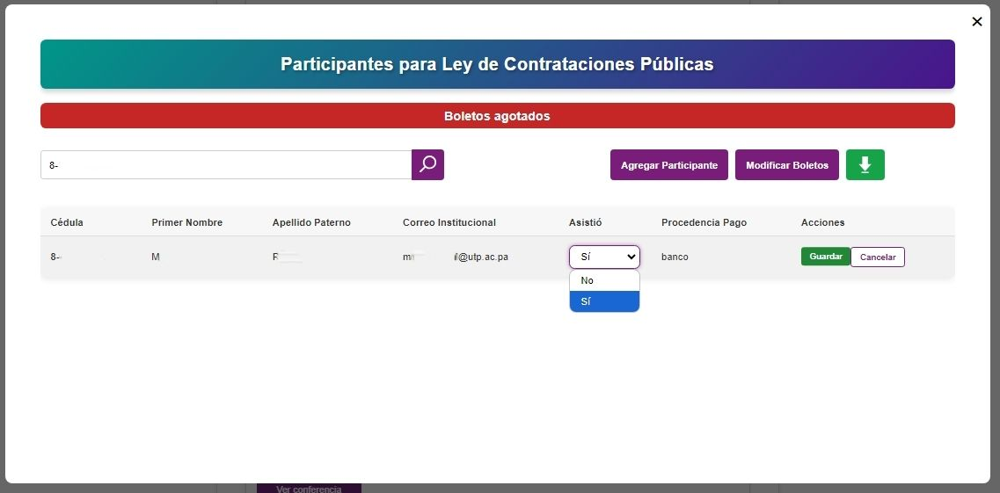
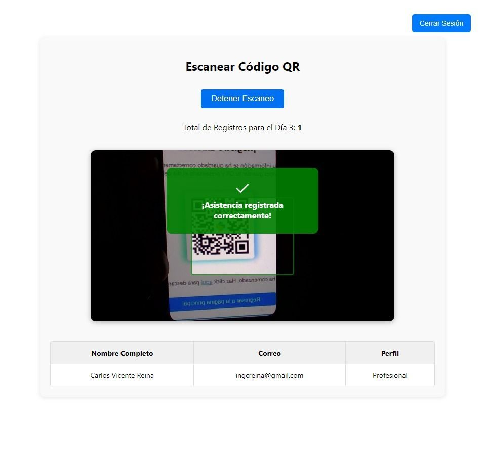
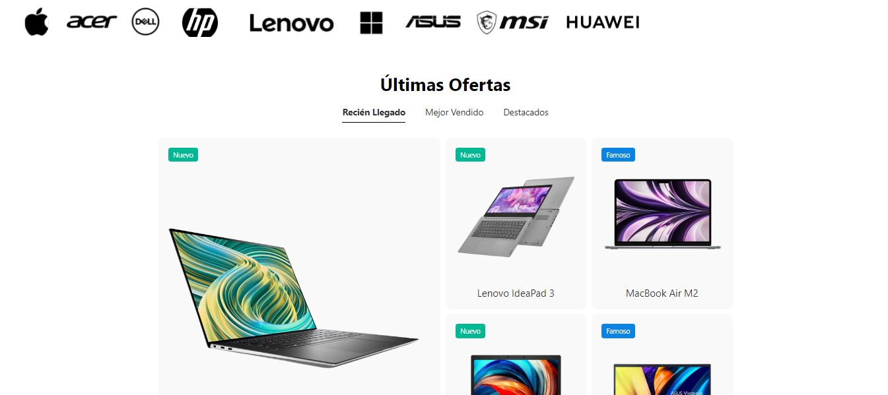

Mis Proyectos



XIV Semana de Ingeniería
Sistema de registro y control de asistencia para conferencias.


Escáner QR PyCon
Sistema para registro y escaneo de asistencias en PyCon Panamá.

E-commerce
Plataforma de comercio electrónico para laptops.